Curs gratuït d’automatització no-code
Curs bàsic de Make i automatitzacions
Aprèn des de zero com funciona Make, què és una automatització, com es construeixen escenaris i com aplicar mòduls, triggers, routers, filtres, webhooks, iteradors i agregadors en casos reals.

Presentem el Curs bàsic de Make i automatitzacions, dissenyat per a persones que volen entendre l’automatització des de zero i aplicar-la en casos reals.
El curs es divideix en dues parts:
- Part teòrica: conceptes clau per entendre com funciona Make.
- Part pràctica: creació d’automatitzacions reals pas a pas.
⚙️ Part 1. Teoria
1. Què és una automatització
1. 📌 Què és una automatització?
Una automatització és com tenir un ajudant digital que fa tasques per tu de manera automàtica.
👉 Tu decideixes la regla: “quan passi això 👉 fes això altre, automàticament”.
2. 🔧 Eines més conegudes
◉ Zapier → molt fàcil d’utilitzar, connecta milers d’apps.
◉ IFTTT → perfecte per començar amb coses senzilles.
◉ Make → molt visual, amb moltes opcions.
◉ n8n → molt flexible, fins i tot el pots instal·lar al teu propi servidor.
3. ✨ Exemples senzills per començar
◉ Guardar automàticament les teves fotos al núvol cada vegada que les fas.
◉ Publicar automàticament en diverses xarxes socials amb un sol clic.
◉ Rebre automàticament un WhatsApp quan algú omple el teu formulari.
◉ Organitzar automàticament les teves factures: quan arriben al correu, es guarden a la teva carpeta de despeses.
◉ Crear automàticament un recordatori al teu calendari quan et manden una cita per email.
◉ Anotar automàticament a la teva llista de tasques cada vegada que algú t’envia una comanda.
4. 🚀 Exemples més avançats per créixer
◉ Generar automàticament factures a partir de comandes online i enviar-les al client.
◉ Recollir automàticament dades de correus, formularis i fulls de càlcul → analitzar-les → i enviar-te un informe setmanal.
◉ Coordinar automàticament clients, equip i eines: quan un client compra, rep un email, es crea una tasca per a l’equip i s’actualitza el CRM.
5. 🌍 I més enllà…
L’automatització no té límits.
Pots començar amb tasques petites i senzilles, però també crear sistemes automàtics que connectin dades, aplicacions i equips complets.
👉 L’únic que cal és imaginar què vols aconseguir, perquè avui la tecnologia ja permet gairebé tot.
6. ✅ Avantatges d’automatitzar
◉ Estalvia temps automàticament ⏳.
◉ Redueix errors automàticament ❌.
◉ Dona tranquil·litat automàticament 🧘.
◉ Et permet enfocar-te automàticament en allò important 💡.
7. ✅ 📍 En resum:
L’automatització és com posar la teva vida digital en pilot automàtic. Des del més senzill fins al més complex, les possibilitats són gairebé infinites. L’automatització permet substituir tasques repetitives per processos automàtics. Make connecta aplicacions i serveis perquè treballin de manera coordinada.
2. Eines d’automatització
1. 🛠️ Eines d’automatització
L’automatització consisteix a connectar aplicacions perquè facin tasques soles, sense que les hagis de repetir manualment.
2. 🔗 Què són les eines d’automatització?
Són programes que funcionen com una cola digital: uneixen diferents aplicacions i fan que “parlin” entre elles. Amb aquestes eines pots crear fluxos de treball, també anomenats workflows o escenaris, que s’activen automàticament quan passa alguna cosa.
👉 El millor és que no necessites saber programar. Aquestes eines estan pensades perquè qualsevol persona les pugui utilitzar, fins i tot si mai no ha tocat una línia de codi.
3. 📌 Exemple senzill
1. Algú omple un formulari ✍️.
2. La informació escrita, com el nom, el correu o el missatge, es guarda en un full de càlcul 📊.
3. Automàticament reps un avís per WhatsApp o per correu 📩.
👉 Tot això passa sol, sense que hagis de copiar i enganxar res.
⚡ Si t’hi fixes, això passa perquè l’eina d’automatització fa que el formulari, el full de càlcul i WhatsApp es puguin comunicar entre ells i treballar en cadena.
4. ⚡ Exemples ràpids
◉ Quan algú compra a la teva botiga online 🛒 → es genera automàticament una factura en PDF 📄.
◉ Quan reps un email amb un adjunt 📧 → aquest arxiu es guarda al teu Google Drive ☁️.
◉ Quan publiques a Instagram 📷 → el mateix contingut es comparteix a Twitter 🐦 i LinkedIn 💼.
◉ Una acadèmia, per exemple, pot automatitzar que quan un alumne s’inscriu 🧑🎓 → se li enviï un email de benvinguda ✉️ i se l’apunti en un full de seguiment 📑.
👉 Aquests fluxos poden ser molt simples o tan complexos com vulguis.
5. 🔝 Eines més utilitzades
◉Zapier → Molt popular i fàcil d’utilitzar.
◉ Make, abans Integromat → Flexible i potent, ideal per a escenaris més avançats.
◉ n8n → De codi obert, instal·lable al teu propi servidor i molt personalitzable.
6. 📊 Quadre resum d’eines d’automatització
Zapier → Dificultat: fàcil. Avantatges principals: molt intuïtiu i amb moltes integracions. Ideal per a principiants i pimes.
Make → Dificultat: mitjana. Avantatges principals: molt visual, potent i permet fluxos complexos. Ideal per a usuaris que volen més control.
n8n → Dificultat: avançada. Avantatges principals: gratuït, de codi obert i molt personalitzable. Ideal per a usuaris tècnics o empreses amb servidor propi.
7. 💡 Beneficis d’utilitzar automatització
◉ Estalvi de temps ⏳: evites tasques repetitives.
◉ Menys errors ❌: ja no depens de copiar i enganxar a mà.
◉ Més productivitat 🚀: pots centrar-te en allò important.
◉ Escalabilitat 📈: comences amb coses simples i pots créixer fins a sistemes complexos.
8. 📝 En resum
Les eines d’automatització són com una cola digital que connecta aplicacions entre elles. Et permeten estalviar temps, reduir errors i crear fluxos que poden anar des del més senzill, com guardar dades en un full de càlcul, fins al més complex que puguis imaginar. I el millor: no necessites saber programar per començar 🚀.
3. Com es construeix una automatització pas a pas
1. 🛠️ Com es construeix una automatització pas a pas
Fins ara hem vist què és l’automatització i quines eines existeixen. Però potser encara tens el dubte:
👉 “D’acord, però com funciona això a la pràctica? Quina pinta té una automatització real?”
En aquesta fitxa descobrirem l’estructura bàsica de qualsevol automatització, sense entrar encara en conceptes massa tècnics. La idea és que entenguis la lògica general, com si veiessis el mapa d’un viatge abans de començar a caminar.
2. 📦 L’escenari o flux de treball workflow
Cada automatització viu dins del que normalment s’anomena escenari, en Make, zap, en Zapier, o workflow, és a dir, flux de treball en general.
👉 Imagina que és el contenidor o caixa on passa la màgia. Dins d’aquest escenari col·loquem els passos que volem que s’executin.
💡 Exemple senzill:
Un escenari podria ser: “Cada vegada que algú ompli un formulari, per exemple amb Google Forms, guarda la seva resposta en un full de càlcul, per exemple Google Sheets o Excel, i envia-li un correu de confirmació, per exemple amb Gmail o Outlook.”
3. 🧩 Els mòduls o blocs d’acció
Dins de l’escenari afegim el que les eines anomenen mòduls, en Make, passos, en Zapier, o nodes, en n8n.
Un mòdul és simplement un bloc que fa una tasca concreta dins del flux, escenari o workflow.
⚫ Moltes vegades un mòdul correspon a una aplicació externa:
◉ Exemple: un mòdul de Gmail per detectar si arriba un correu.
◉ Exemple: un mòdul de Google Sheets per afegir una fila en un full de càlcul.
⚫ Però altres vegades un mòdul és una funció interna de la mateixa eina:
◉ Exemple: un mòdul que converteix dades a un altre format, com JSON.
◉ Exemple: un mòdul que compta quants registres han arribat.
◉ Exemple: un mòdul que agrupa diverses dades abans d’enviar-les.
👉 El més important és entendre que un mòdul no sempre és igual a una aplicació, sinó que és una peça del flux o escenari que fa alguna cosa específica: rep, transforma o envia dades.
Ho podries veure com una cadena de muntatge:
1. Entra una dada, per exemple el nom i el correu electrònic d’algú.
2. Passa per un mòdul que la guarda en un full de càlcul, és a dir, en una aplicació.
3. Després passa per un altre mòdul que transforma la dada en un format específic, és a dir, una funció interna.
4. Finalment arriba a un mòdul que l’envia com a correu de benvinguda, és a dir, una aplicació.
👉 D’aquesta manera, tots els mòduls treballen junts com engranatges dins d’un mecanisme.
4. 🚀 El viatge de les dades
L’automatització, en el fons, és un viatge de dades entre aplicacions.
◉ Tot comença amb un esdeveniment inicial: algú omple un formulari, per exemple amb Google Forms, arriba un correu, per exemple amb Gmail o Outlook, o s’afegeix un nou contacte en una base de dades, per exemple en Airtable o Access.
◉ Després, aquesta dada “viatja” de mòdul en mòdul, és a dir, d’aplicació en aplicació o de funció en funció.
◉ Finalment, arriba a una destinació: guardar-se, enviar-se o generar una notificació.
El més interessant és que tu decideixes el camí: pot ser tan senzill com un parell de passos, o molt més complex, amb bifurcacions i condicions.
5. 📊 Un exemple visual i simple
Posem un exemple clàssic:
Google Forms, formulari online per recollir dades → Make, eina d’automatització → Google Sheets, full de càlcul → Gmail, correu electrònic.
1. Una persona omple un formulari, per exemple amb Google Forms.
2. L’automatització ho guarda automàticament en un full de càlcul, per exemple Google Sheets.
3. En aquell mateix instant, s’envia un email de benvinguda al nou contacte, per exemple amb Gmail.
👉 Tot això passa sense que ho hagis de fer manualment.
💡 Exemple d’automatització senzilla feta amb Make que consisteix en què cada vegada que algú omple un formulari, en aquest cas des de l’aplicació Tally, s’actualitza la base de dades de possibles clients, Airtable, s’envia un email de benvinguda, Gmail, i es torna a actualitzar la base de dades, Airtable, indicant que el correu ha estat enviat.
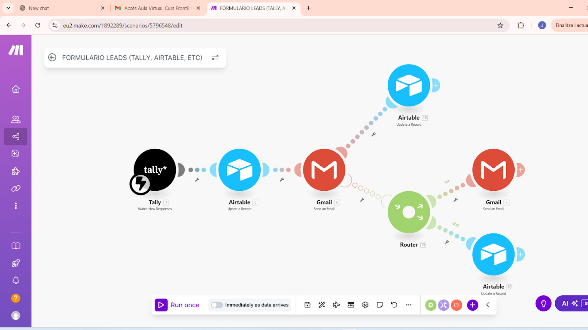
6. 📝 Resum de la fitxa
En aquesta fitxa hem après que:
◉ Una automatització viu dins d’un escenari o flux de treball workflow.
◉ Dins d’aquest escenari col·loquem mòduls, que poden ser aplicacions externes o funcions internes, que executen tasques.
◉ El que realment passa és un viatge de dades des d’un punt d’origen fins a una destinació, passant per tots els passos que hàgim definit.
7. 🚀 Preparant el terreny per a la pròxima fitxa
A la següent fitxa veurem en detall els components tècnics bàsics de qualsevol flux:
◉ Què és un disparador trigger.
◉ Què és una acció action.
◉ Què són els filtres, condicions, bifurcacions i fins i tot els famosos webhooks, etc.
Així, ja no tindràs només el mapa, sinó també les peces clau que el fan funcionar.
4. Els disparadors – El punt d’arrencada d’una automatització
1.⚡ Els disparadors – El punt d’arrencada d’una automatització
A la fitxa anterior vam veure que una automatització viu dins d’un escenari i que està formada per mòduls que executen tasques. Però, com sap Make quan ha de començar a executar aquest escenari? Aquí entra en joc el disparador, o trigger.
👉 Un disparador o trigger és l’esdeveniment inicial que activa l’escenari. Sense disparador, l’automatització no arrenca mai.
2.⚡ Què és un disparador o trigger?
Pensa-hi com si fos un “interruptor”.
◉ Alguna cosa passa → el disparador o trigger ho detecta → i això posa en marxa tot l’escenari.
◉ Sense disparador, el flux o escenari està adormit.
Exemples amb aplicacions senzilles:
◉ Algú envia un formulari a Tally.
◉ T’arriba un correu de benvinguda a Gmail.
👉 A Make, el primer mòdul de l’escenari sempre és el disparador. En aquesta fitxa, més endavant, es veu un dibuix aclaridor.
3. 🧩 Tipus de disparadors a Make
Make ofereix dos grans tipus de disparadors:
◉ Disparadors instantanis, instant triggers: reaccionen al moment, tan aviat com passa l’esdeveniment.
◉ Exemple: un usuari envia un formulari des de Tally, el contingut d’aquest formulari arriba a Make i l’escenari arrenca a l’instant. Aquí podem observar el trigger de Tally, però podria ser d’altres aplicacions, on el llampec indica que l’escenari s’executarà de manera immediata.
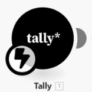
◉ Disparadors programats, scheduled triggers: Make revisa de manera periòdica si hi ha alguna cosa nova o si ha d’executar una tasca en un moment concret.
👉 La freqüència és totalment configurable:
🔹 Cada pocs minuts, per exemple cada 5, 10, 15 o 30 minuts.
🔹 Una vegada al dia, a l’hora que tu decideixis.
🔹 En dies concrets de la setmana, per exemple només dilluns i dijous.
🔹 En dies del mes o dates específiques, per exemple el dia 1 de cada mes o el 31 de desembre.
🔹 etc.
A la figura següent podem veure un trigger o disparador per a l’aplicació de formularis Tally, que en lloc d’executar l’automatització de manera immediata, amb el llampec, ho farà en funció del temps o dels dies que hàgim configurat, amb el rellotge. Com es pot observar, en aquest cas no hi ha un llampec, sinó un rellotge.
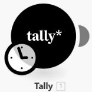
Exemple: executar un escenari cada dia 1 a les 9:00 per generar i enviar un informe mensual en PDF. Aquesta diferència és important perquè afecta la rapidesa de resposta i també el consum d’operacions. En parlarem més endavant, quan comencem a fer automatitzacions de manera pràctica.
4. 🖼️ Exemple visual amb Tally + Airtable + Gmail
Imagina aquest escenari senzill:
Tally, formulari → Make, disparador en detectar una resposta nova → Airtable, guardar dades → Gmail, enviar confirmació
◉ Una persona omple un formulari a Tally.
◉ El disparador a Make detecta la nova resposta.
◉ Les dades es guarden automàticament en una taula d’Airtable.
◉ S’envia un correu de confirmació a l’usuari, o a l’administrador, a través de Gmail.
📌 Aquí el primer mòdul, Tally, actua com a disparador.
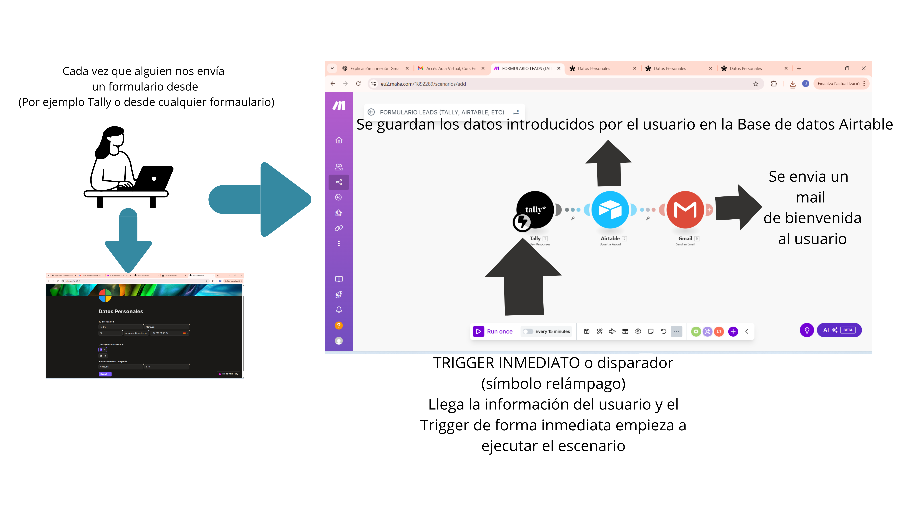
5. 📝 Resum de la fitxa
En aquesta fitxa hem après que:
◉ Un disparador és el que inicia l’automatització.
◉ Sempre és el primer mòdul d’un escenari.
◉ Pot ser instantani o programat.
◉ Sense disparador, l’escenari no comença mai.
◉ En el nostre exemple: Tally → Airtable → Gmail.
5. Connexions: la clau que obre les aplicacions
1. 🔗 Què és una connexió?
Quan afegim un mòdul a Make que correspon a una aplicació externa, per exemple Gmail, Airtable o Telegram, Make necessita un permís especial per poder treballar amb aquesta aplicació.
Aquest permís és el que anomenem connexió.
👉 Dit d’una altra manera: una connexió és com donar una clau digital a Make perquè pugui entrar a la teva aplicació i automatitzar tasques en nom teu.
Exemple quotidià: seria com donar a un amic una còpia de la clau de casa teva perquè regui les plantes. No li dones casa teva, només un accés limitat i revocable.
2. ❓Quan necessites una connexió?
◉ Els mòduls interns de Make, per exemple Formatter, Delay o Math, no necessiten connexió, perquè no depenen de cap aplicació externa.
◉ Els mòduls d’aplicacions externes, per exemple Gmail, Slack, Airtable o Telegram, sí que requereixen connexió. Abans de poder configurar el mòdul, Make et demanarà crear o seleccionar una connexió.
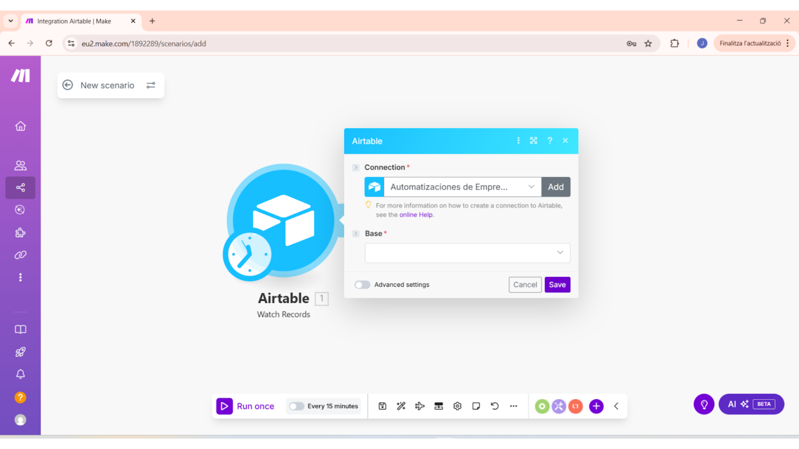
Per exemple, la imatge superior mostra que quan afegeixes el mòdul “Watch Records” d’Airtable, el primer que Make et demanarà és triar o crear una Connection, és a dir, una connexió. La imatge mostra exactament aquest camp “Connection”, que és el primer pas que veuràs.
📌 Aclariment important: aquesta imatge no ensenya com crear la connexió completa; només mostra que, per avançar amb un mòdul d’una aplicació, has de tenir una connexió. Si vols veure el pas a pas per crear la connexió, consulta l’Annex: Connexió amb Airtable, o l’annex corresponent a l’app que necessitis.
3. ❓Com es configuren les connexions?
Cada aplicació defineix el seu propi mètode d’accés; no ets tu qui decideix el mètode, sinó l’aplicació. Make s’adapta al que l’app exigeix. Els mètodes més habituals són:
◉ OAuth, autenticació moderna
🔹S’obre una finestra on inicies sessió i autoritzes permisos, per exemple amb Google o amb moltes integracions actuals.
🔹Make no et demana claus manuals; gestiona l’accés amb tokens que es renoven.
◉ API Key / Token , cada vegada menys habitual
🔹L’aplicació et dona una clau que copies i enganxes a Make.
🔹És més directe, però moltes plataformes l’estan substituint per OAuth.
🔔 Missatge de calma per a principiants: si ara aquests termes et sonen estranys, OAuth, API Key o token, no et preocupis: als annexos pràctics veurem, pas a pas, com fer cada connexió.
4. ⚠️ Compte amb les diferències, exemples pràctics
◉ Google Gmail → sol requerir OAuth i processos de verificació; pot ser més complex, perquè cal acceptar permisos i, de vegades, renovar autoritzacions.
◉ Airtable → actualment utilitza OAuth, ja no es basa en el mètode antic de token API públic.
◉ Telegram → utilitza un token de bot, que obtens des de @BotFather. És relativament senzill i per això se sol utilitzar en exemples ràpids.
Comentari pràctic: una automatització conceptual com Google Forms → Google Sheets → Gmail és molt clara com a flux, però la complexitat real acostuma a estar en la gestió de la connexió amb Google. Per això, a les fitxes pràctiques convé utilitzar exemples fàcils per començar.
5. 🧩 Exemple pràctic breu: crear una connexió senzilla
Com a exemple molt breu i directe, perquè es vegi el mínim imprescindible:
Exemple amb Telegram, token:
1. Afegeixes el mòdul Telegram — Send a message.
2. Make et demana Connection → prems Add.
3. Enganxes el token del bot, que obtens en crear un bot a @BotFather.
4. Acceptes i la connexió queda disponible per a aquest escenari i per a altres escenaris.
Per a Airtable, el flux serà semblant conceptualment, però la finestra d’autorització et portarà pel procés OAuth. Per això en aquesta fitxa no fem aquí el tutorial complet.
6. 📝 Resum ràpid
1. Una connexió és el permís que dones a Make perquè accedeixi a una app externa.
2. Només els mòduls que utilitzen aplicacions externes la necessiten.
3. El mètode de connexió el defineix l’aplicació, com OAuth, token o API Key.
4. Algunes connexions són molt senzilles, com Telegram; altres poden ser més exigents, com Google o Airtable amb OAuth.
5. Si vols el pas a pas complet per a una app concreta, consulta l’Annex: Connexió amb [NomApp].
6. Connexions: Webhooks, la porta que escolta
1. ❓ Què és un webhook? Resum clar i relació amb els triggers
1. Un webhook és una forma de trigger en què una aplicació externa avisa Make en temps real quan passa alguna cosa rellevant.
2. Recordatori, connectant amb fitxes anteriors: a la fitxa 4 vam veure els triggers: instantanis, que reaccionen quan passa alguna cosa, i programats o scheduled, en què Make revisa cada cert temps.
3. 👉 El webhook és un altre tipus de trigger push: en lloc que Make vagi a preguntar, l’aplicació externa empeny la informació cap a Make.
4. Important: no tots els triggers instantanis són webhooks, i no tots els webhooks requereixen que els programis manualment. Algunes integracions ofereixen triggers “instantanis” ja preparats a Make, més fàcils per a l’usuari; altres aplicacions requereixen que configuris un webhook explícit.
Exemple senzill: és com si, en lloc de baixar cada 10 minuts a preguntar si ha arribat el paquet, el repartidor truqués al timbre i t’avisés al moment.
2. 🔄 Entrant incoming vs sortint outgoing, explicat sense tecnicismes
◉ 📩 Webhook entrant, incoming webhook: l’app externa envia dades a una URL que crea Make → això dispara l’escenari.
🔹Exemple: la teva plataforma de pagaments, com Stripe, quan confirma un pagament, envia un missatge a Make perquè processi l’operació.
◉ 📤 Webhook sortint, outgoing webhook: Make envia dades cap a una URL externa. Això es fa amb el mòdul HTTP de Make.
🔹S’utilitza quan vols notificar un altre sistema des de Make.
💬Què és això d’una “crida HTTP”?
🔹És simplement la manera com una app “envia un missatget per Internet” a una altra: una adreça web rep aquest missatget.
🔹No necessites saber-ne els detalls tècnics ara; n’hi ha prou amb entendre que és el mecanisme estàndard perquè les apps es parlin per Internet.
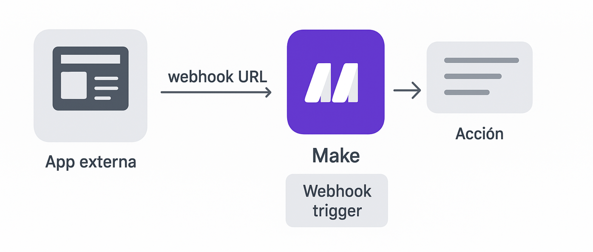
3. ❓Webhook vs triggers natius: quin utilitzar i per què?
◉ ⚡ Utilitza triggers natius de Make quan existeixin i siguin instantanis, per exemple alguns mòduls oficials com Tally, Stripe o altres integracions que Make ja té. Són més simples: selecciones el trigger i ja està.
◉ 🔌 Utilitza un webhook quan l’app:
🔹No té un trigger natiu a Make, o
🔹Necessites integrar-la amb una app personalitzada, o
🔹Vols màxima immediatesa i control.
4.❓ Com s’utilitza un webhook a Make, versió per a principiants
1. Afegeixes al teu escenari el mòdul Webhook, com Custom webhook o Webhook response.
2. Make et genera una URL única, el teu “timbre digital”.
3. Enganxes aquesta URL a l’app externa, o al seu panell de webhooks, indicant quan ha d’enviar dades.
4. Fas una prova, per exemple enviant un formulari, i comproves que Make rep les dades.
Nota: no cal entendre tots els tecnicismes ara; el flux general és “obtenir URL → enganxar-la a l’app que envia esdeveniments → provar”.
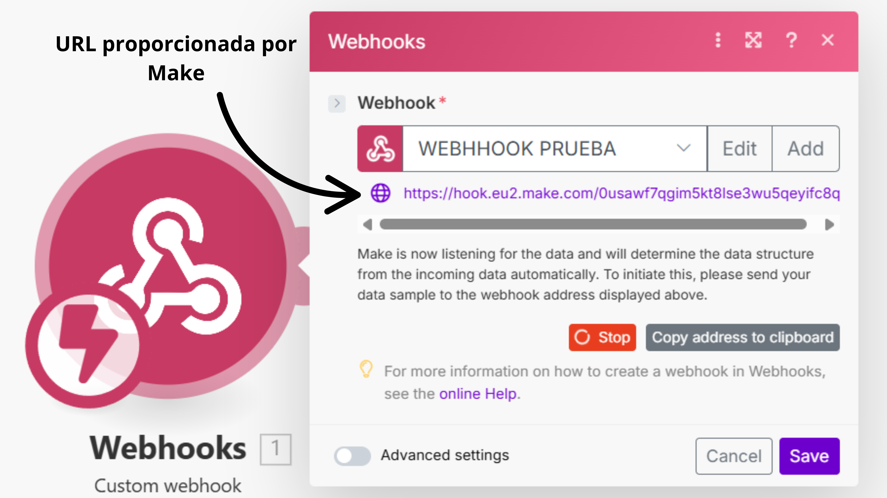
5. 🧩 Exemples pràctics i comparatius per aclarir casos reals
◉ Exemple A, trigger natiu: Tally → Make amb trigger oficial. El mòdul instantani de Tally a Make rep la resposta al moment.
◉ Exemple B, webhook manual: una plataforma sense integració oficial → Make → configures un webhook en aquesta plataforma perquè enviï dades a Make.
◉ Exemple C, pagaments: Stripe → Stripe envia un webhook a Make → Make guarda el pagament a Airtable i envia confirmació per Telegram.
👉 Si hi ha un mòdul de trigger oficial, utilitza’l; si no, demana al proveïdor que enviï les dades a la URL del webhook.
6. 📝 Seguretat i proves, explicat de manera simple
◉ 🔐 Utilitza sempre la URL tal com Make te la dona i no la comparteixis públicament.
◉ 🔎 Moltes apps permeten signar o identificar els seus missatges; quan això passi, ho veurem en un annex avançat.
◉ 🧪 Per provar sense trencar res, fes sempre una prova controlada, per exemple enviant un formulari de prova.
7. 📝 Resum final: el que has de recordar
◉ Un webhook és una forma de trigger push: l’app externa avisa Make al moment.
◉ Existeixen triggers instantanis natius i webhooks; tots dos poden donar immediatesa.
◉ Si Make té un trigger oficial, utilitza’l, perquè és més còmode. Si no, configura un webhook.
◉ Mantén la seguretat i prova sempre amb dades de test.
◉ Els detalls tècnics, com JSON, signatures o idempotència, poden anar en un annex per quan vulguis aprofundir.
7. Accions
“Si un trigger encén la metxa… l’acció és el que explota, és a dir, el resultat visible.”
1. 🔎 Què és una acció a Make?
Una acció és el que fa Make una vegada que l’escenari s’ha activat amb un trigger o disparador.
🔹El trigger, com un webhook o un registre nou, és l’avís inicial.
🔹L’acció és la tasca concreta que Make executa com a resposta a aquest avís.
👉 Pensa-hi com una reacció en cadena:
🔹Trigger: sona el timbre de casa teva.
🔹Acció: t’aixeques i obres la porta.
El timbre, és a dir, el trigger, no té sentit si després ningú obre la porta, és a dir, si no hi ha cap acció.
2. 🧩 Exemples quotidians d’accions
1. Algú compra a la teva botiga online → acció: Make envia un email de confirmació al client.
2. Reps un formulari de contacte → acció: Make guarda la informació a Airtable.
3. T’arriba un pagament a Stripe → acció: Make envia un missatge al teu canal de Telegram avisant l’equip.
Cada una d’aquestes tasques que passen després del “disparador” inicial és una acció.
3. 📚 Diferència entre trigger i acció
◉ Trigger, o disparador: detecta un esdeveniment. Exemple: “Nova comanda rebuda”.
◉ Acció: fa alguna cosa amb aquesta informació. Exemple: “Crear un registre a Google Sheets amb les dades de la comanda”.
👉 Regla fàcil de recordar:
◉ Trigger = avís.
◉ Acció = reacció.
4. 🛠️ Tipus d’accions més comunes a Make
◉ Crear alguna cosa: crear un registre a Airtable, un document a Google Docs o un esdeveniment a Calendar.
◉ Enviar alguna cosa: enviar un email, un missatge de Slack, una notificació de Telegram, una notificació de WhatsApp, etc.
◉ Actualitzar alguna cosa: canviar l’estat d’una comanda al teu CRM o actualitzar l’estoc a la teva base de dades.
5. ✅ Resum de la fitxa
◉ Les accions són les tasques que Make executa després d’un trigger.
◉ Sempre van juntes: Trigger → Acció → Resultat.
◉ Exemple senzill: “Quan algú omple un formulari, trigger → guardar les seves dades en un full, acció”.
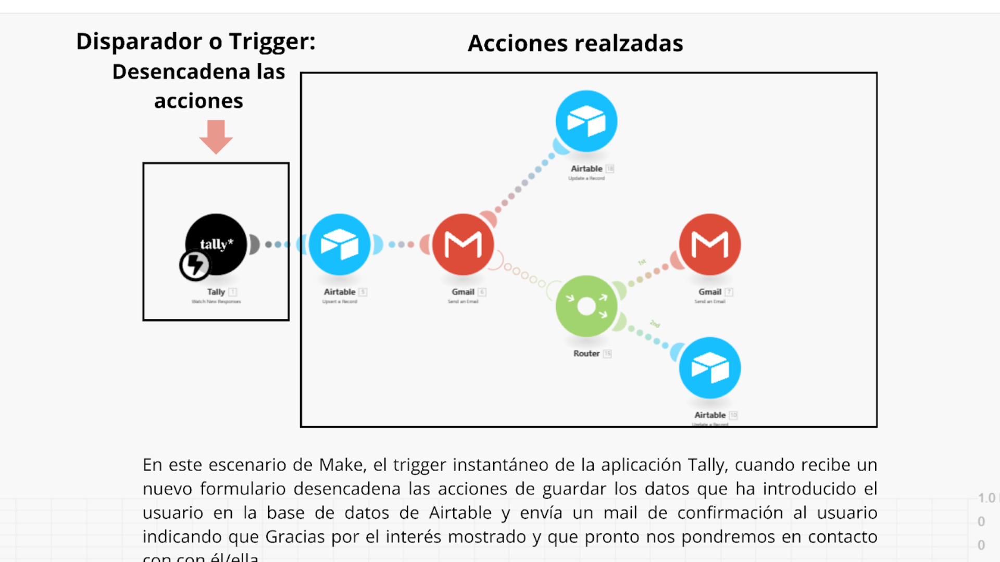
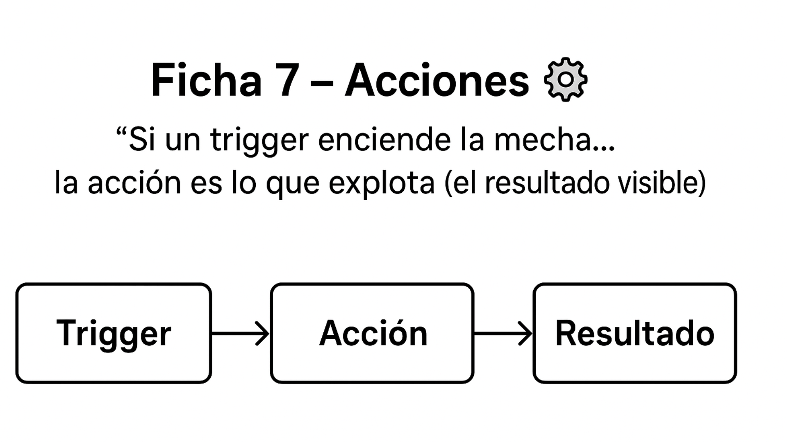
8. Rutes, filtres i lògica: quan el teu escenari pren decisions
1. 💡 Per què necessitem lògica en un escenari?
Fins ara, les nostres automatitzacions eren lineals: un trigger → una acció → un resultat.
Però a la vida real, les coses gairebé mai són tan simples.
Exemple quotidià:
🔹Si reps un missatge d’un amic → el contestes de seguida.
🔹Si reps un missatge de publicitat → l’ignores.
👉 Make també necessita aquesta capacitat de decidir què ha de fer en cada cas.
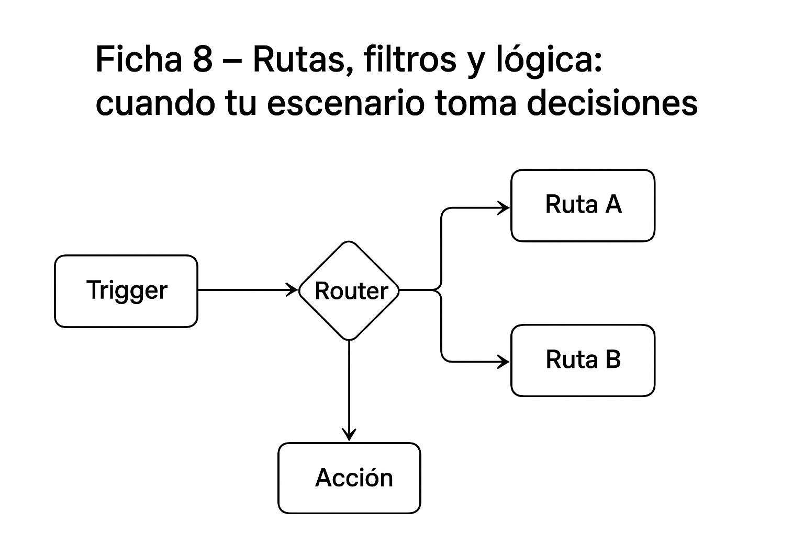
2. 🛤️ Què són les rutes a Make?
Una ruta és com un desviament a la carretera dins del teu escenari. El flux pot seguir diferents camins segons el que passi.
A Make, el mòdul que permet crear aquests desviaments s’anomena Router. Cada Router obre diversos camins possibles, anomenats branches, i tu decideixes què passa en cadascun.
Exemple:
🔹Trigger: arriba un formulari de contacte.
🔹Ruta A, amb Router: si el tema és “Vendes” → enviar-lo a l’equip comercial.
🔹Ruta B, amb Router: si el tema és “Suport” → enviar-lo a l’equip tècnic.
👉 Pensa en el Router com si fos una rotonda: arribes a un punt i tries quina sortida agafar segons la informació rebuda.
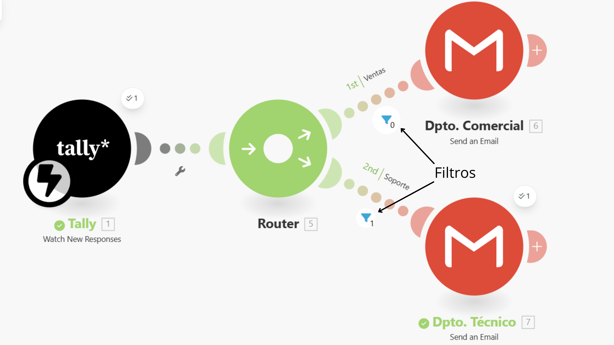
3. 🔽 Què són els filtres?
Un filtre és com un semàfor: deixa passar la informació només si compleix una condició. Si no, la bloqueja.
A Make, els filtres s’apliquen dins de cada camí del Router o entre mòduls, per controlar quines dades continuen endavant.
Exemple quotidià:
◉ Només deixes entrar a casa persones que coneixes → filtre = “conec aquesta persona?”.
◉ Només respons correus si contenen la paraula “urgent” → filtre aplicat a Make.
👉 Així, cada ruta del Router pot tenir el seu propi filtre, garantint que cada camí només s’utilitzi amb la informació adequada.
4. ⚖️ Lògica a Make: prendre decisions
La lògica és la capacitat d’aplicar regles més complexes dins d’un escenari.
Combina rutes + filtres + condicions.
Exemple:
◉ Trigger: nova comanda a la botiga online.
◉ Lògica aplicada:
🔹 Si la comanda és superior a 100 € → enviar un cupó de descompte.
🔹 Si la comanda és inferior → només enviar confirmació estàndard.
👉 Igual que tu no actues sempre igual, Make pot reaccionar de manera diferent segons la situació.
5. 📝 Resum pràctic
◉ Rutes, Router = desviaments del camí → diferents fluxos segons les dades.
◉ Filtres = semàfors → deixen passar només la informació que compleix condicions.
◉ Lògica = regles de decisió que combinen rutes i filtres.
Amb això, els teus escenaris deixen de ser lineals i es tornen intel·ligents i flexibles.
🔖 Nota important
Tots aquests exemples són introductoris perquè entenguis la idea de rutes, filtres i lògica.
👉 Més endavant, farem junts escenaris pràctics a Make, on veuràs pas a pas com aplicar-ho en casos reals.
9. Iterador: desgranant dades pas a pas
1. Què és un iterador?
Un iterador a Make és com una eina que agafa un “paquet” amb diversos elements a dins i els va traient un a un perquè Make pugui treballar amb cada element per separat.
🔹Imagina una caixa de galetes: l’iterador no et dona la caixa sencera, sinó que et va entregant galeta per galeta.
🔹A Make, aquest mòdul s’anomena Iterator.

2. 🎯 Per què és útil?
En molts escenaris, les dades no arriben d’una en una, sinó en lots:
Exemples:
🔹Un correu amb diversos adjunts.
🔹Un formulari on algú escriu diverses respostes en una sola pregunta, per exemple una llista d’aficions separades per comes.
🔹Una botiga online que envia una comanda amb diversos productes.
Amb un iterador, pots processar cada adjunt, cada resposta o cada producte de manera individual.
Exemple de Make amb Iterador, Iterator, que extreu els arxius adjunts del correu i els copia en una carpeta de Dropbox.
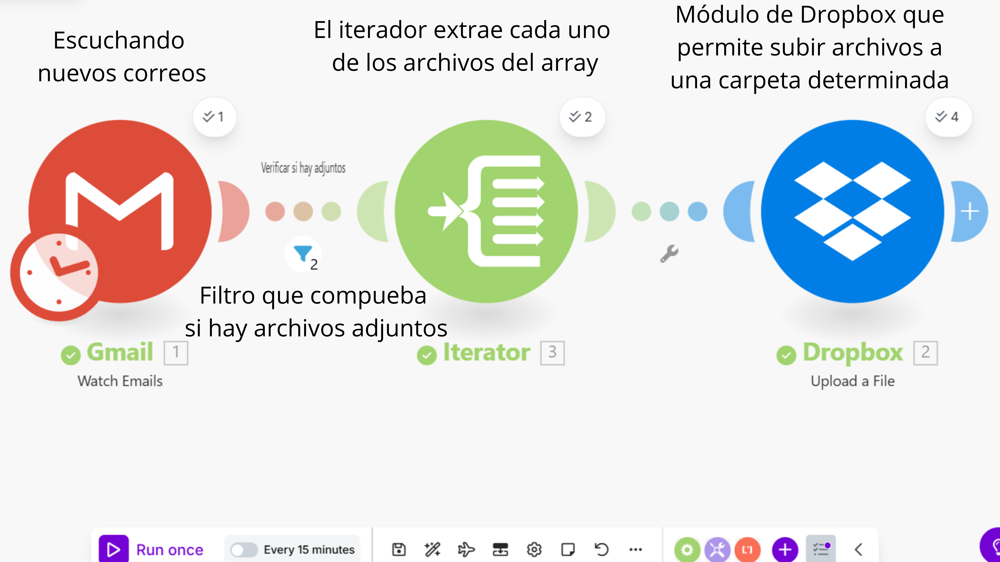
3. 🍪 Exemple quotidià
Pensa en una safata amb tres galetes de xocolata.
🔹Sense iterador → Make veu la safata completa i no sap què ha de fer amb cada galeta.
🔹Amb iterador → Make treu la galeta 1 i la processa; després la galeta 2; després la galeta 3.
Així pots aplicar una acció a cada galeta per separat:
🔹Guardar cadascuna en una taula.
🔹Enviar un missatge diferent per a cadascuna.
4. 🛠️ Exemple senzill a Make
Escenari: reps una comanda d’una botiga online amb 3 productes.
🔹Pas 1: La comanda arriba com un bloc de dades amb els 3 productes a dins.
🔹Pas 2: Col·loques un mòdul Iterator.
🔹Pas 3: L’iterador “desmunta” la comanda en producte 1, producte 2, producte 3.
🔹Pas 4: Després pots utilitzar un mòdul “Google Sheets → Add Row” perquè cada producte es guardi en una fila diferent del full.
5. 😉 Nota per a tu
No et preocupis si al principi sembla una mica abstracte. Tots aquests exemples i molts més els practicarem en escenaris reals, perquè s’entengui de manera visual i no es quedi només en la teoria.
10. ArrayAggregator: reunir elements en un sol paquet 📦
1. 🔍 Què és ArrayAggregator?
L’Array Aggregator de Make és un mòdul que reuneix diversos elements individuals en un únic “grup”, una llista o array, perquè després puguis processar-los tots junts.
🔹Analogia: imagina que tens moltes cartes soltes i que l’agregador és la carpeta on les poses totes per enviar-les d’una sola vegada.
🔹Funció bàsica: recollir + empaquetar per enviar o utilitzar després.
2. 🎯 Per a què serveix?
Serveix quan no vols processar cada ítem o element de manera aïllada, sinó fer alguna cosa amb el conjunt: un informe diari, un email de resum, un CSV amb totes les entrades, un lot per enviar a una altra API, etc.
🔹Complementa l’Iterator: si l’Iterator o mòdul iterator divideix, és a dir, treu una galeta cada vegada, l’Aggregator o mòdul Array Aggregator ajunta, és a dir, posa les galetes dins d’una caixa.
🔹També pot servir en un formulari on algú escriu diverses respostes en una sola pregunta, per exemple una llista d’aficions separades per comes.
🔹Casos típics: resum diari de correus, agrupar respostes de formularis del dia, ajuntar adjunts per enviar-los en un sol paquet.
S’adjunta un exemple real creat amb Make. No et preocupis perquè el veurem amb detall en els casos pràctics. En aquest escenari, tots els arxius nous que es pugen a una carpeta de Dropbox s’envien a un Array Aggregator, que els empaqueta en un únic paquet per després enviar tots aquests arxius en un únic email amb el mòdul de Gmail.
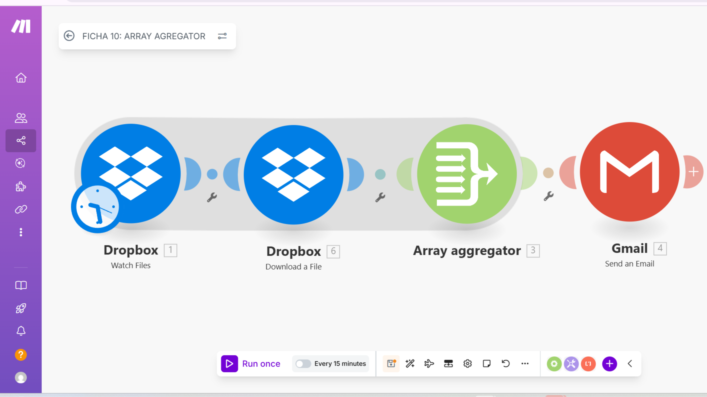
3. 🧩 Exemples senzills i pràctics
Exemple A — Digest de correus, resum diari de leads
🔹Objectiu: enviar cada dia un únic correu amb la llista d’assumptes i remitents dels emails entrants.
🔹Passos conceptuals:
🔹 Trigger: Mòdul de Make Gmail – Watch Emails, configurat per revisar cada 24 hores, o a l’hora exacta que vulguis.
🔹 Apliquem un filtre: només correus d’interès, per exemple amb l’etiqueta “leads”.
🔹 Array Aggregator: empaqueta tots els correus detectats en aquella execució, amb remitent, assumpte i data.
🔹 Acció final: generar un cos d’email amb la llista i enviar-lo en un únic correu-resum.
Exemple B — Agrupar respostes d’un formulari
🔹Objectiu: processar en lot les respostes d’un formulari.
🔹Passos conceptuals:
🔹 Trigger: Typeform / Tally – Watch Responses, executat cada hora.
🔹 Array Aggregator: agrupa totes les respostes rebudes en aquest període.
🔹 Acció final: guardar-les en bloc a Google Sheets o convertir-les en un CSV i adjuntar-les a un correu.
Exemple C — Resum de productes d’una comanda, per optimitzar crides a API
🔹Objectiu: enviar la informació d’una comanda amb diverses línies de producte en un únic bloc.
🔹Passos conceptuals:
🔹 Trigger: Shopify – Watch Products detecta una nova comanda.
🔹 Array Aggregator: empaqueta les línies de la comanda, amb producte, quantitat i preu, en un sol array.
🔹 Acció final: enviar el paquet complet a l’ERP o CRM en una única crida API, en lloc d’una crida per cada línia.
🔔 Recorda que l’Array Aggregator treballa amb les dades recollides en l’execució de l’escenari. No acumula “en temps real” mentre arriben els elements. Per això, si vols enviaments periòdics, cada dia o cada hora, el control es configura en el trigger de temps, no en l’agregador.
4. ⚙️ Com funciona conceptualment a Make, versió per a principiants
Imagina que estàs organitzant els teus correus, respostes de formularis o comandes de productes: cadascun arriba de manera individual, i tu vols ajuntar-los tots en un mateix paquet per enviar-los o processar-los de cop.
◉ Trigger = el detector o disparador:
🔹 Pot ser un esdeveniment, per exemple arriba un correu o algú respon un formulari.
🔹 O pot ser un temps que tu tries, per exemple cada hora o cada dia.
🔹 És el que decideix quan comença l’escenari.
◉ Array Aggregator = la caixa organitzadora:
🔹 Cada vegada que l’escenari s’activa, l’Array Aggregator recull els elements que arriben.
🔹 Els afegeix a un “paquet”, segons el que envia el trigger.
🔹 No decideix quan enviar res, només empaqueta el que arriba.
◉ Array = la llista de tot el que s’ha recollit:
🔹 Per a tu, que comences, un array és simplement una llista d’elements. Per exemple: [Correu1, Correu2, Correu3]. Cada element pot ser un correu, una resposta de formulari o una línia de comanda.
🔹 El mòdul següent de l’escenari pot utilitzar tots els elements de la llista alhora: enviar un email amb resum, crear un CSV, actualitzar un Google Sheet…
💡 Analogia visual:
Pensa en el trigger com una font d’objectes que cauen sobre una cinta transportadora. L’Array Aggregator és un calaix que els va recollint. Quan Make decideix passar la caixa al pas següent, tot el que hi ha dins viatja junt. La caixa no té voluntat: només recull el que li arriba.

5. ⚠️ Bones pràctiques i precaucions
◉ Comença amb poc: prova amb 2–5 elements abans d’enviar grans quantitats.
◉ Decideix la freqüència al trigger: si vols un resum diari, programa el trigger cada dia; si vols processar-ho tot al moment, configura disparadors en temps real.
◉ Evita caixes gegants: massa elements junts poden alentir el teu escenari o superar límits de Make.
◉ Mantén l’ordre si és important: els ítems arriben en l’ordre en què els detecta el trigger; si l’ordre importa, revisa que es mantingui.
◉ Evita duplicats: si hi ha risc de repetir elements, afegeix lògica de filtratge abans d’enviar-los al mòdul següent.
◉ Registra per depurar: si les dades són importants, guarda un registre temporal, per exemple a Google Sheets, abans d’enviar-les per poder revisar errors.
💡 Consell d’expert: l’Array Aggregator és com un empaquetador passiu: no decideix res, només organitza. Tot el control de quan s’executa i què arriba el determinen el trigger i la configuració de l’escenari.
6. ✅ Resum ràpid
◉ Array Aggregator reuneix múltiples ítems en una sola llista per processar-los en bloc.
◉ És útil per a resums, enviaments per lots, creació de CSV/resums o reducció de crides a APIs.
◉ Complementa l’Iterator: un divideix, l’altre ajunta.
11. Variables, comptadors i funcions – El kit secret de Make 🧾
1. 🔍 Objectiu
Comprendre què són les variables, comptadors i funcions de tot tipus, per exemple booleanes, matemàtiques, de text, d’arrays i de data/hora, per crear escenaris més dinàmics i controlats. Aquesta fitxa proporciona la base teòrica que aplicarem més endavant en exercicis pràctics.
2. 🔣 Variables a Make
◉ Què són: Les variables són contenidors per emmagatzemar dades. Pots imaginar cada variable com una “caixa” amb una etiqueta: guarda un valor que pots utilitzar i reutilitzar en diferents mòduls del teu escenari.
◉ Exemple senzill: Guardar el nombre de fitxers processats o el nom d’un usuari per utilitzar-lo després en un correu.
◉ Com funcionen: Cada variable té un nom únic i un valor que pot canviar. Quan Make executa un escenari, el nom de la variable se substitueix pel seu valor actual.
💡 Pensa en una mudança a una casa nova: cada caixa té una etiqueta, que seria el nom, i un contingut, que seria el valor. Quan necessites alguna cosa, busques la caixa per l’etiqueta i obtens el que hi ha dins.
🔔 No et preocupis si ara ho veus una mica abstracte; a la part pràctica veurem escenaris reals on entendràs tots aquests conceptes.
3. 🔢 Comptadors
◉ Què són: Els comptadors són variables que s’incrementen o es decrementen per portar el compte d’esdeveniments, elements o iteracions dins d’un escenari.
◉ Exemple real: Enviar un correu únicament després que s’hagin processat 5 elements d’un array.
◉ Com funcionen: Es defineixen com a variables incrementables i s’actualitzen amb el mòdul Eina > Funció Incrementar. Es poden reiniciar en cada execució o mantenir el seu valor segons el que necessitis.
4. ⚙️ Funcions a Make
◉ Què són: Make ofereix funcions per transformar i manipular dades dins d’un escenari. No es limiten a funcions matemàtiques: també hi ha funcions de text, booleanes, per a arrays i de data/hora.
◉ Tipus principals:
🔹 Matemàtiques: suma, mitjana, màxim, mínim…
🔹 Booleanes: cert/fals, comparacions, lògica AND/OR…
🔹 Text: concatenar, extreure, substituir, longitud…
🔹 Arrays: unir, filtrar, comptar elements, transformar…
🔹 Data i hora: formatar, sumar o restar dies, convertir zones horàries…
🔹 Avançades: parseig de JSON, manipulació de dades complexes…
Exemple senzill: netejar un nom abans d’enviar-lo per correu o comptar només els elements vàlids d’un array abans d’afegir-los a un resum.